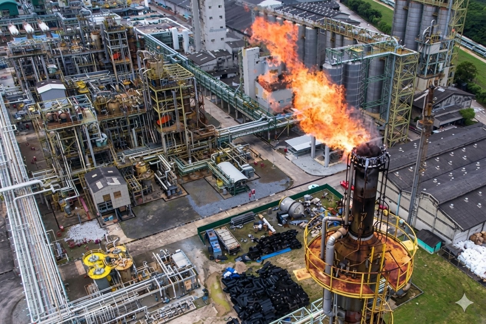
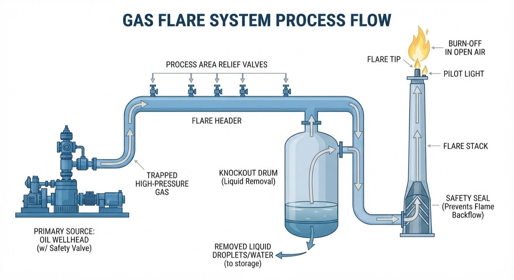
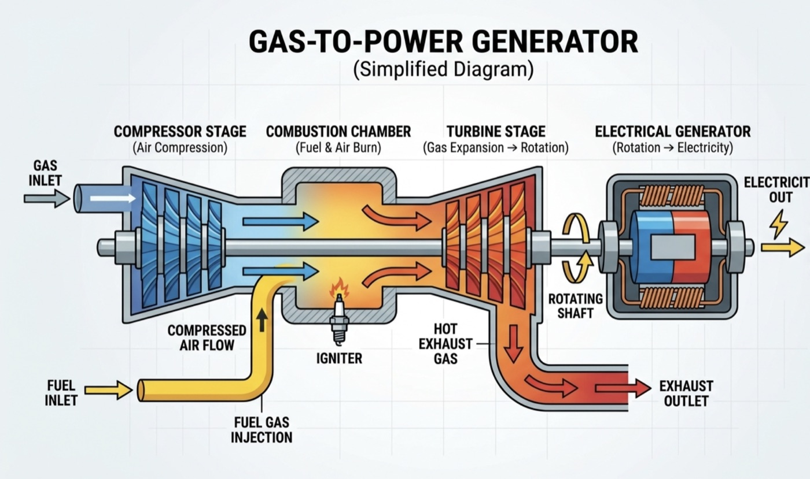

A gas flare system is a vital safety system for any commercial upstream oil and gas operation. Flares burn off excess, unusable or dangerous gases to prevent possible explosions and they serve as a pressure release system. Gas flaring is rooted in a need to balance safety, economic outcomes and environmental factors, which needs examination beyond just the visible flame.
Gas flares can be defined as combustion devices designed to safely and efficiently destroy waste gases, typically released during the extraction of oil.
An oil well produces a mixture of oil, water and gas. The gas component typically contains methane, ethane, propane, heavier hydrocarbons, CO₂, nitrogen, water vapour and contaminants such as hydrogen sulphide (H₂S).
Without a viable operational infrastructure to collect the gas, it is typically sent to the flare stack.
While coverage mainly centers on production flaring, there are actually three main types of flaring that could be happening:

Safety valves open from the primary source (the oil wellhead) to release trapped gas into a network of collection pipes called the flare header. The header channels high-pressure gas away from production areas and towards the flare stack.
Before the gas can be burned, it passes through a specialized holding tank called a knockout drum. The drum is a filter that removes liquid droplets or water from the gas stream. Clearing liquids is critical to preventing a rain of fire (burning droplets falling to the ground) or damage to the burner at the top of the tower.
Only dry gas should travel up a tall vertical tower. The gas passes through a safety seal that prevents fire from traveling backward until it reaches the flare tip. It is there that a small, continuously burning pilot light instantly ignites the gas, where it burns in the open air.
It is possible for a system to have more than one flare to treat multiple sources of waste gas. However, the majority of flaring takes place at the top of the stack. Flares can vary significantly depending on the volume and composition of the gas being burned.
Other differences like the height of the flare indicate the gas intensity, whilst heat and the noise decibel level can also vary greatly across sites.
In itself, the process of flaring is a relatively efficient method of disposing of toxic gases.
Many flares will run with a burning efficiency of over 90%, turning a mixture of highly toxic gases into less harmful CO₂ and water. The real problem is the unburnt portion containing methane, a gas roughly 80 times more powerful than CO₂ as a warming agent over a 20-year period(3). Effectively operated flares can achieve a 98% efficiency whilst poorly operated sites may be as low as 62%.
An underappreciated feature of gas flaring is the immense amount of noise produced by an active flare. It is often compared to a giant blowtorch or a jet engine taking off, reaching between 130 and 145 decibels (dB). Much depends on the volume, content and velocity of the gas, but the noise is a byproduct of the shockwaves produced when cold gas rapidly converts into hot flue gas.
Gas monetisation is most often an infrastructure problem. Throughout the years oil has been standardized to trade at international benchmarks. With its high value and ability to be transported as a global commodity, infrastructure was built to support oil.
Associated gas is different. A remote gas field requires a pipeline, compressors, processing, dehydration, metering and an offtake contract before the gas becomes commercially useful. Often in domestic markets, gas trades at a much lower value than oil, making the processing of gas (and transport to alternative markets) less cost effective than flaring it.
The gas released during oil extraction is often too toxic to just release into the atmosphere and too volatile to be left alongside the drilling process.
While the fines have increased over the years, the penalties for flaring have been insufficient to halt the practice. In Nigeria, gas flared without the regulator's authorisation now carries a charge of $3.50 per 1,000 standard cubic feet, a flat rate that replaced the earlier two-tier regime of $2.00 and $0.50 that varied with the producer's operational size(2). The charge has largely been treated as a cost of doing business.
The answer is not as simple as connecting associated gas to a generator. A typical gas-to-power treatment plant may look as follows.

First, the raw gas must go through a separation process from the crude oil. The mixture, when pumped to the surface, enters a series of high-pressure separators that isolate the oil from the gas. At this stage the gas contains heavy hydrocarbons, water and corrosive contaminants like hydrogen sulfide which could corrode a generator.
Impurities must be filtered out with heavy liquids stripped away to create a clean, dry fuel gas.
Once purified, the conditioned gas is transferred directly into gas engines or turbines at a power generation facility. In a typical gas turbine, the gas is mixed with compressed air and ignited. The high-energy, expanding exhaust gases spin the turbine blades at extreme speeds, turning a shaft connected to an electrical generator. This mechanical rotation creates an electromagnetic field, generating electricity that is then sent through transformers or the grid.
Where operated onsite, a reciprocating gas engine or micro turbine is better suited to receive a gas that has variations in quality.
Bitcoin mining machines run 24/7, requiring careful management and repairs of high-intensity generating equipment. To preserve the lifespan of generators, they are largely run under full capacity (70-80% load) with a full maintenance schedule including downtime. Preserving the generators includes the monitoring and cleaning of dust, filters, valves, alternators and other critical components.
However, the biggest factor influencing generator maintenance comes down to the gas itself and meeting the manufacturer's specifications for:
Zero global flaring is highly unlikely to be achieved but significantly lower rates are highly possible.
The primary reason against zero flaring is the role gas flaring plays as a safety mechanism. Norway, a pioneer in policy against flaring at its North Sea oil platforms, enacted many of the policies that are now seen across the world and in Nigeria.
The Norwegians banned routine flaring in 1971. Since then, each site in Norway must have a plan for associated gas before receiving drilling approval. In addition, heavy carbon taxes are imposed on each cubic meter of gas flared.
Illustrating the work that lies ahead, Norway runs at roughly 9 standard cubic feet of gas flared per barrel of oil produced, about 0.25 m³, against a North Sea weighted average of 49(4). The global average flaring intensity is 5.1 m³ per barrel, while Nigeria flared 12.0 m³ per barrel in 2024, up from 11.0 m³ the year before and more than twice the global average(1).
Flaring presents both climate and environmental impacts. An estimated 389 million tonnes of CO₂e were emitted in 2024, including around 46 million tonnes of CO₂e from unburned methane(1). Flares can release black carbon and other pollutants when combustion is incomplete.
For communities near oil-producing areas, they are subject to pollution from air, heat, noise and light, alongside exposure to combustion by-products. Reports of respiratory issues, aggravations and complications related to that exposure are common in flaring locations.
Environmentally, flaring traps heat in the atmosphere. When volatile organic compounds and nitrous oxides (NOx) bake together in sunlight, they create ground-level ozone and smog. This can lead to acid rain, rising soil temperatures and elevated heat in the local environment.
The severity varies significantly, with the impact intensified in regions with weak monitoring and regulation.
You can get in touch to understand how NRG Bloom is tackling gas flaring with off-grid data centers.
Operate a site with stranded or flared gas? We convert it into power on site.
See how we work with energy partners →